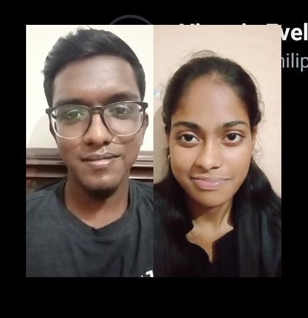
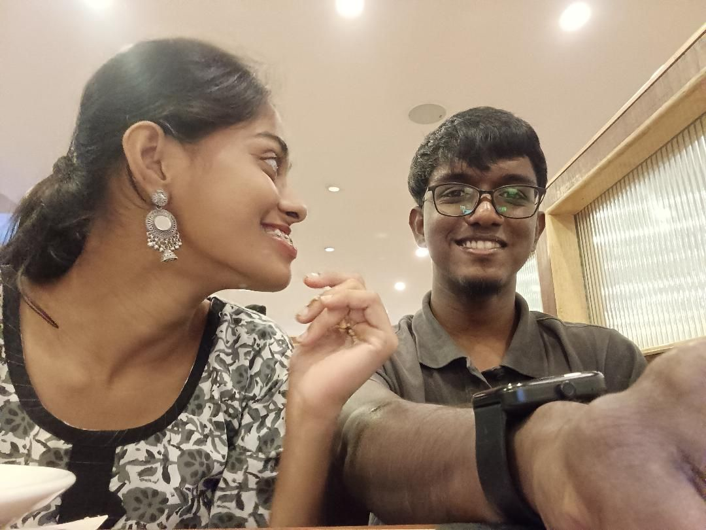
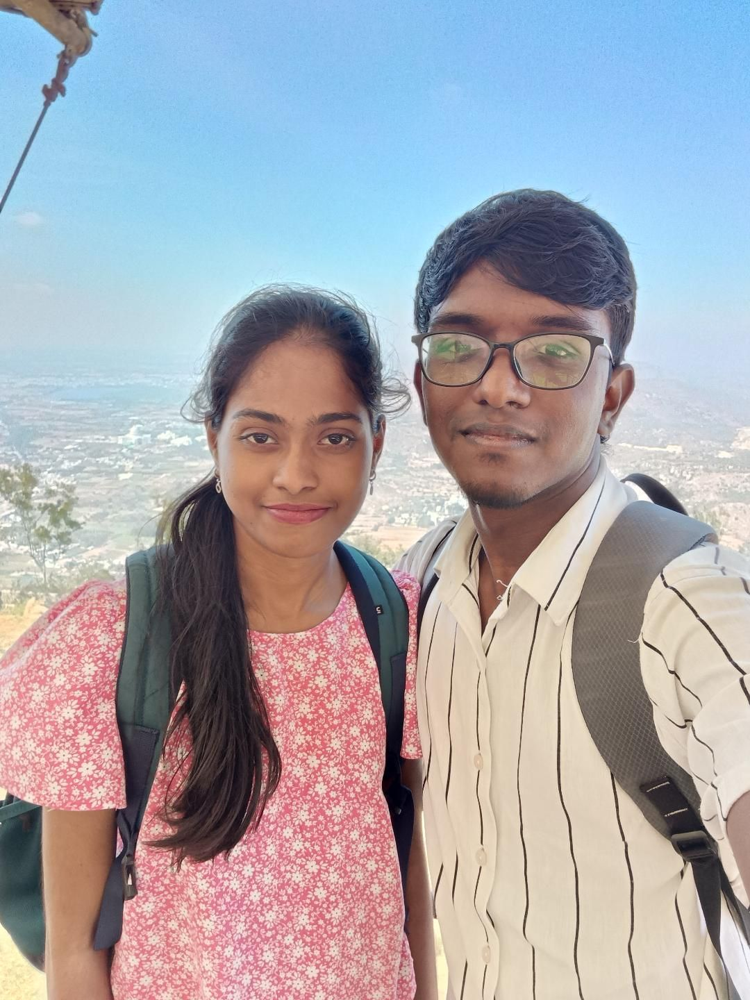

Baby. I still remember the first time I saw you lol...... I honestly thought you were a terror and even a professor...... but later, I started catching feels for you...... your vibe, your kindness, that cute smile and the way you play the keyboard...... I lowkey admired you so much.
Every Saturday I used to get a chance of seeing you in the name of practice...... and I fell for you...... I was waiting for the opportunity to talk to you, but I didn’t get a chance at all...... then I saw your Insta in the suggestions and started texting you every day...... slowly, I started noticing everything about you...... the way you care for people, the way you pray, the way you live your faith.
And then, you were like why are we even texting...... we had some arguments and stuff...... but I just couldn’t forget you...... the more you said no, the stronger my feelings got day by day...... I had never felt love before, it was my first time loving someone...... I never thought I would get such feelings ever in my life.
Then I had to tell you my feelings...... we had fights and arguments, but we left that and continued our talks and texts...... then you asked me about it again...... I stayed strong, and when you said let’s stop texting, I felt like everything had finished...... but I didn’t lose hope...... I made up my mind and stood still...... I even fought with your sis and had arguments, but still...... I kept believing...... I prayed every day with God to have you, and finally...... God answered my prayers...... now see us...... from all the chaos, confusion, fights, and waiting...... here we are, together, stronger than ever...... hand in hand, heart to heart, growing in love and faith...... living the blessing that God gave me.
I want us to love each other more...... want to overcome the battles and struggles...... and live a Christ-centered life...... submitting ourselves fully to God’s ministry...... walking together in faith...... and making our love a reflection of His blessings.


